v0.5 M4 · Ícones novos e contêiner aberto
icon_drillB aprovado: copiado praassets/sprites/icon_drill.png(substitui o antigo) e registrado no contrato §6.- Broca de mão: o sprite exato. O quadro 0 do
drill_side.pngtem 19×10 px com contorno, então não cabe inteiro em 16 de largura. X: as 16 primeiras colunas do corpo pixel a pixel (carcaça, faixa, LED, cabo, mandril) e a ponta da broca encurtada em 3 colunas. Y: o quadro todo por nearest em 16×8 (perde a espiral e o contorno fica falhado, mas é "o desenho inteiro"). Z (canvas maior que 16×16): não dá sem mexer em código. Oitem_icon(game/render.py) escala o PNG ×2 e o slot (draw_slot,game/ui.py) cola o resultado fixo em(x*2+4, y*2+4)sem centralizar; um ícone maior que 16×16 sai do slot (40 px nativos, 32 de ícone + 4 de margem de cada lado). Recomendo X. - Aba Base com a porta entreaberta: 2 opções, partindo da fachada A.
Rodada 3 · Broca de mão (sprite exato)
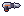
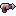
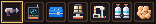
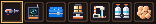
A X mantém a carcaça, o LED, a faixa laranja e o cabo com a base laranja idênticos ao quadro 0; só a broca fica mais curta (a espiral vira 2 listras). A Y mantém a broca comprida, mas amassa tudo na vertical e perde o cabo e o LED legíveis.
Rodada 3 · Aba "Base" com a porta entreaberta
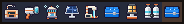
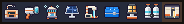
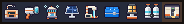
Fileira de abas com o icon_drill novo e a aba Base em cada opção. Sugestão de nome: icon_tab_base.png.
Recomendo a 1 (fresta amarela quente: lê "luz de dentro" mais rápido que o verde).
- Contêiner aberto: a B foi aprovada e já está em
assets/sprites/container_open.png(40×44), com a linha no contrato da bíblia §6. - Ícone da broca de mão refeito a partir do quadro 0 do
drill_side.png: carcaça cinza, faixa laranja, LED ciano, cabo escuro com base laranja, broca prateada. 2 opções (reto e diagonal). icon_drill(a drill automática) refeito pra ler como a máquina domachine_drill.png: base com tela, mastro, braço, cabeça e feixe ciano entrando no chão com a brasa. 3 opções.- Ícone novo da aba Base do construtor (
icon_tab_base), com as cores dos blocos da base. 2 opções. - Os candidatos desta rodada ficam em
pendentes/até o ok do dono.
Rodada 2 · Broca de mão (item 2)
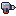
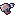
Mantém a silhueta da broca da mão (carcaça, mandril escuro, broca cônica de aço, cabo com base laranja), reduzida pra 16×16
com contorno #1b1630. O 1 é o reto, o mais fiel ao quadro 0; o 2 é o mesmo girado 28° (cabe na diagonal,
mas o cabo vira escada e perde limpeza). Recomendo o 1.
Rodada 2 · Drill automática (item 3) · B APROVADA

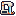
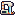
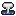
A fonte é a máquina do chão: pedestal bege com a tela escura, mastro com faixa laranja, braço, cabeça bege com o LED e o feixe ciano furando o chão (brasa laranja e faíscas). No A sobra espaço vazio entre o mastro e a cabeça pra silhueta não virar caixa. O C é o mais legível em 16 px, mas já não mostra a máquina inteira. Recomendo A.
Rodada 2 · Aba "Base" do construtor (item 4)
Os 3 últimos são os ícones de item da base (parede, porta, chão), pra comparar: o da aba é bem diferente deles (um é o conjunto montado, os outros são peças soltas). Recomendo A (parede + porta + chão numa fachada só, lê "construir base").
Fileira de abas do fabricador na ordem de FAB_TAB_ICON (game/ui.py) com a aba Base no fim (a última, marrom).
Nome sugerido: icon_tab_base.png (a candidata escolhida renomeada).
Rodada 1 · Contêiner aberto (B aprovado) e broca de mão (substituída pela rodada 2)
- Ícone da broca de mão nv.1 (
icon_hand_drill, 16×16): a mesma pistola dodrill_side.pngque o player segura (carcaça cinza-metal, faixa laranja, LED ciano, cabo escuro, mandril e broca cônica de aço), de perfil, bocal pra direita, contorno#1b1630. Não confunde com oicon_drill(a drill automática é uma máquina branca com pé e broca pra baixo). - Contêiner aberto (
container_open, 40×44): o mesmo modelo r3d v1.1 docontainer_sealed(mesma caixa, pivô e pé), com a tampa girada pra trás na dobradiça, o miolo escuro e vazio, o trinco levantado, as duas cintas de aço cortadas (só o coto) e o selo dourado partido. - B aprovada e promovida a
container_open.png. O resto da rodada 1 (broca A/B/C) foi substituído pela rodada 2.
Ícone da broca de mão · 3 candidatas
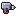
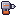
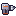
A é a fiel à da mão (carcaça mais comprida, cabo fino, bit cônico). B é mais robusta, com a bateria laranja grande no cabo: lê melhor como "equipamento", mas se afasta um pouco da broca da mão. C é compacta, com o bit mais longo e a espiral mais marcada. Recomendo A: é a que mais lembra a broca na mão do player e continua legível em 16 px.
Na hotbar, com os outros ícones
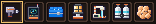
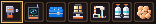
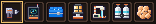
Slots do ui_slot.png (20×20), ícones 16×16 com 2 px de margem, ampliado 4×. O slot 1 está selecionado.
Contêiner aberto · 2 candidatas
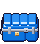
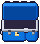
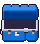
A: tampa toda em pé. B (aprovada): tampa meio aberta, com cara de "forçada".
No chão do jogo
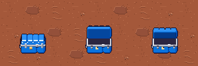
Pro Dev integrar
icon_hand_drill.png: 16×16, mesmo uso dos outrosicon_*(hotbar e inventário). Itemhand_drill.container_open.png: 40×44, mesma âncora docontainer_sealed.png(pé no centro de baixo do tile, a mesma conta de offset); só troca a textura do tileC.CONTAINERquando o contêiner já foi aberto. A silhueta ocupa a mesma caixa; a tampa em pé sobe até a linha 1 do quadro (a do fechado sobe até a linha ~8).- Alpha só 0/255, sem sombra no PNG.
Gerado por
python3 tools/sprites/v05_m4_broca_conteiner.py (determinístico).